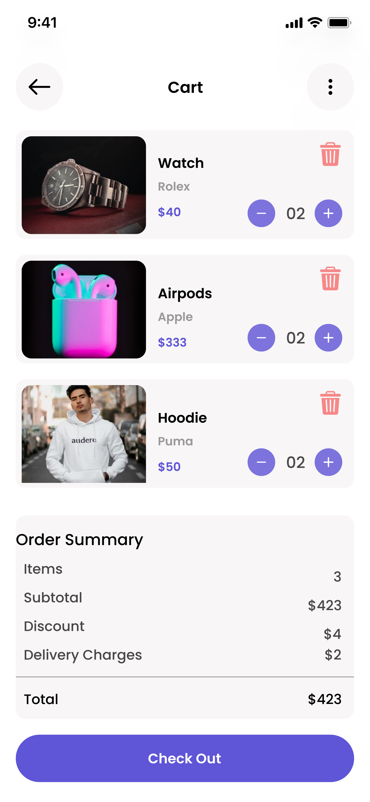
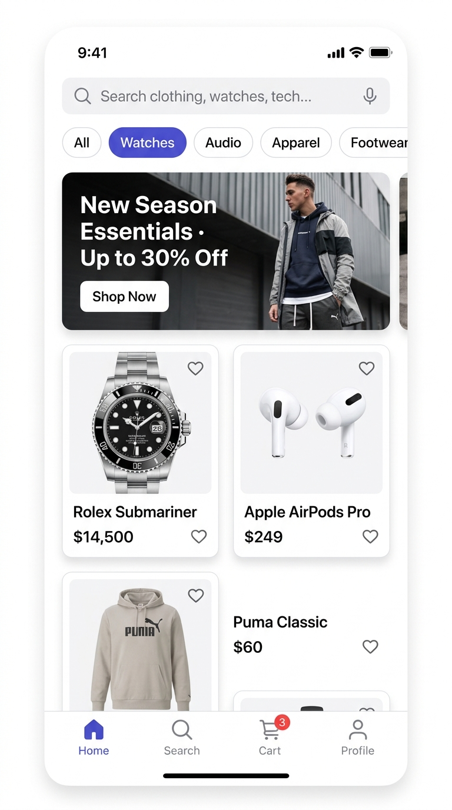
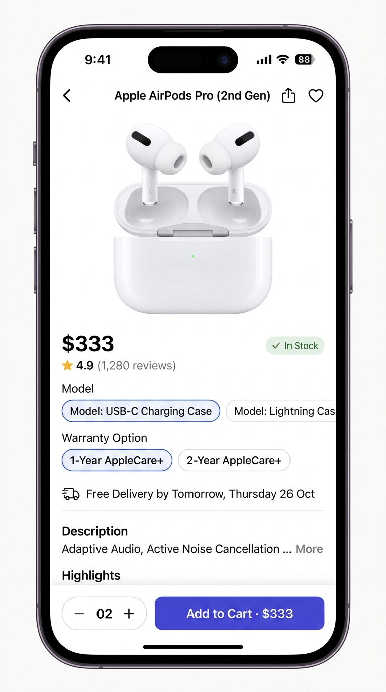
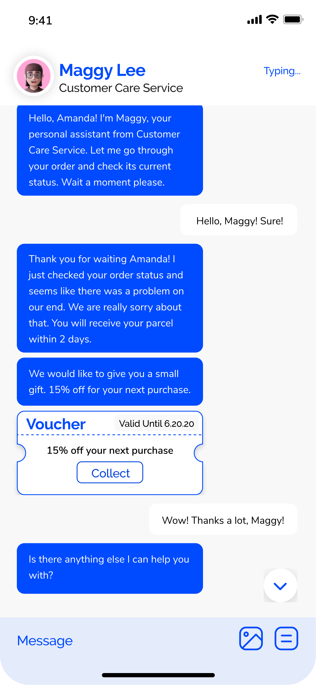
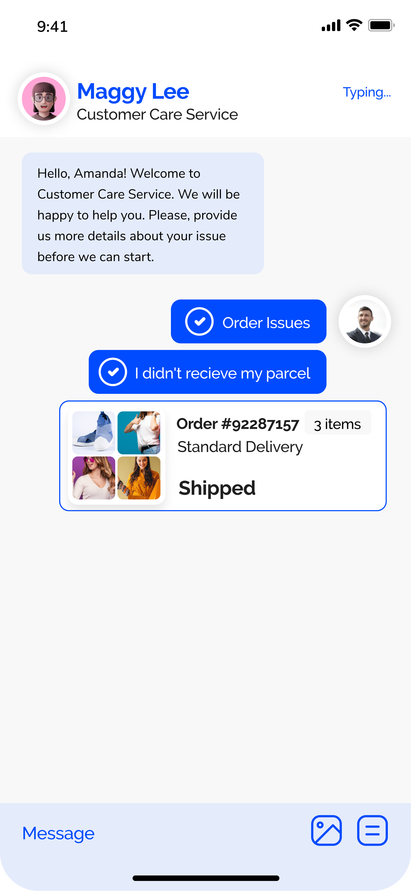
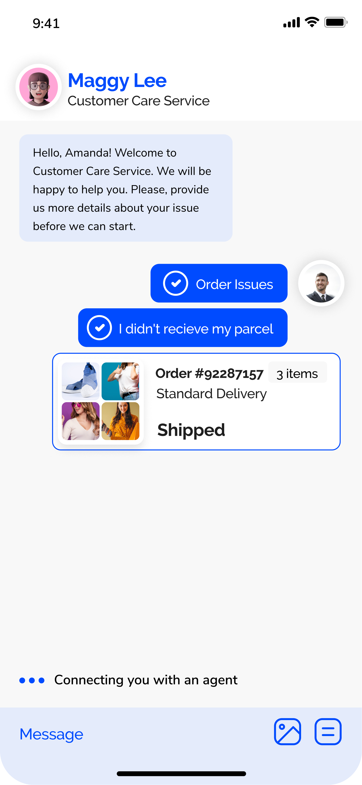

URBAN CART E-Commerce App UX Redesign
Redesigning the mobile shopping journey to make discovery, evaluation, checkout, and post-purchase interaction clearer, predictable, and remarkably more efficient.

“The project was not about redesigning an e-commerce app screen by screen. It was about redesigning the journey from ‘I want something’ to ‘I successfully bought it.’”
Urban Cart — Core Redesign Philosophy
Rethinking Modern Mobile Commerce
Urban Cart was a college UX/UI redesign project focused on transforming a crowded mobile e-commerce application into a frictionless shopping environment. The project adhered strictly to the design-thinking methodology, progressing systematically from user interviews and friction audits through personas, empathy maps, user flows, low-fidelity wireframes, and interactive high-fidelity prototypes.
Frictionless Navigation
Flattening deep menu structures so users never need to understand internal store taxonomy before they start shopping.
Search as First-Class Citizen
Treating the search surface as a primary interaction vehicle with instant auto-suggest, attribute tags, and zero-deadlock filtering.
Product Discovery
Refining promotional dominance into discovery-support cards, allowing genuine products to lead rather than competing flash banners.
Transparent Checkout
Eliminating cognitive uncertainty with an upfront itemized breakdown, transparent delivery fees, and linear 4-step completion.
Information Overload & Competing Stimuli
Modern e-commerce apps frequently suffer from visual greed: dozens of banners, carousel promos, countdown timers, and ambiguous discounts all compete fiercely for user attention, creating cognitive fatigue and high cart abandonment.
How can mobile shopping become faster, clearer, and easier to navigate without removing essential business functionality?
The solution required shifting from an aggregate inventory catalogue model to an intent-driven purchasing pipeline where every screen answers one specific user need before advancing.
Understanding the Urban Shopper
Qualitative user interviews and cognitive walkthroughs were conducted to map mobile shoppers' mental models across discovery, evaluation, pricing transparency, and cart management. The central insight was unequivocal: The redesign needed to prioritize clarity over information density.
Priya Sharma
A fast-paced urban professional who buys everyday fashion, electronics, and accessories on her mobile device during commutes and short breaks. She has high intent and zero patience for dark patterns or cluttered interfaces.
✦ Key Goals
- • Find specific items rapidly using accurate, predictive search queries.
- • Apply intuitive attribute filters (size, price, ratings) without leaving the product list.
- • Compare product variants and specs without scrolling through endless marketing blocks.
- • See total itemized order cost including delivery fees prior to checkout steps.
- • Complete transactions with minimal clicks and zero surprise charges.
✕ Key Frustrations
- • Promotional banners that hide actual merchandise categories.
- • Filter resets that clear user parameters upon back-navigation.
- • Hidden delivery charges revealed only on the credit card entry screen.
- • Long multi-step checkouts requiring unnecessary profile registrations.
- Feels anxious about hidden shipping surcharges at payment.
- Wants reassurance regarding authenticity and delivery ETA.
- Promotional banners competing with product listings.
- Aggressive countdown badges and popups.
- Crowded product cards with unclear price typography.
- Hidden filter menus and obscured category trees.
- Search → Rapidly filter by size & budget.
- Compare ratings and customer reviews.
- Inspect product imagery and delivery dates.
- Add to cart → Review total cost → Complete checkout.
Confusing navigation hierarchy, excessive promotional content crowding out actual items, hidden shipping surcharges at final steps, and cumbersome multi-screen checkouts.
Lightning-fast discovery, upfront transparent item pricing, clear decision-critical product specifications, and an entirely predictable 4-step purchase flow.
Reducing Effort from Intention to Purchase
The core UX strategy centered on one foundational rule: Reduce the effort required to move from intention to purchase. Each stage in the seven-step journey answers one primary user question before advancing, keeping the cognitive path predictable.
Every stage was structurally optimized to eliminate backtracking. Navigation remains linear for primary tasks while allowing non-destructive parameter edits.
Home Hub
Immediate product discovery, high-relevance recommendations, seasonal collections, and non-intrusive promotional anchors.
Search & Filters
Predictive search query bar, recent query memories, popular category pills, and multi-attribute facet refinement.
Categories Hub
Clean visual taxonomy enabling rapid broad-to-narrow departmental browsing without deep nested navigation mazes.
Cart & Verification
Clear verification checkpoint with interactive quantity steppers, itemized delivery calculations, and discount vouchers.
Orders & Tracking
End-to-end post-purchase continuity linking package logistics statuses directly with real-time support assistance.
Profile & Settings
Streamlined address book management, preferred payment methods, security settings, and return history.
Home → Search / Category → Filter Products → Product Listing → Product Details → Add to Cart → Cart Verification → Checkout → Shipping → Order Confirmation → Real-Time Order Tracking.
Production Mobile Experience
Crafted in Figma with an exacting 8pt spatial grid, deliberate visual hierarchy, and product-first photography. Explore the three core architectural modules below.

Home & Product Discovery
Promotional banners support browsing rather than dominating the viewport. Category pills and predictive search anchor the top, allowing shoppers to explore without cognitive resistance.

Product Details & Evaluation
Separates decision-critical parameters (price, customer rating, delivery timeline, specs) from secondary text. A high-contrast sticky Add to Cart bar guarantees zero purchase hesitation.
Transparent Cart Verification
The cart acts as an unambiguous verification step before payment. Displays itemized prices, delivery charges ($2), discounts ($4), and final total ($423) with zero unexpected surprise fees.
Cart → Shipping → Payment → Confirmation
The redesigned flow removes friction by compartmentalizing checkout steps into clear, manageable actions. Users always know their exact position in the transaction pipeline.

Voucher & Compensation
Assistant resolves delivery delays proactively and delivers an instant 15% off voucher ticket with a single-tap "Collect" action.

Contextual Order Triage
Conversational assistant embeds the live Order #92287157 card directly within chat bubbles for seamless order verification.

Escalation Continuity
Smooth handoff between automated bot resolution and live human agent without forcing the user to repeat their issue.
Scalable Component Architecture
To ensure consistency across dozens of application screens, a modular component library was established in Figma. Color tokens, typographic scales, button states, and card structures share strict mathematical rules.
Primary brand accent, CTAs, interactive indicators.
Primary typography and high-contrast boundaries.
Secondary metadata, subtitle specs, and stroke lines.
Clean background base prioritizing crisp product photos.
Delivery confirmations, discount badges, and active state.
Before Redesign (Baseline)
- ✕ Content-heavy viewports with multiple competing banners.
- ✕ Weak typographic hierarchy causing high eye fatigue.
- ✕ Difficult product search requiring exact string match.
- ✕ Unclear checkout progression with high cognitive load.
- ✕ Post-purchase support isolated in deep help center trees.
After Redesign (Urban Cart)
- ✦ Structured interface with calm, breathing whitespace.
- ✦ Razor-sharp typographic hierarchy prioritizing price & ratings.
- ✦ Predictive search and rapid multi-attribute filtering.
- ✦ 100% upfront transparent checkout with zero surprise fees.
- ✦ Conversational shopping assistant embedded right into orders.
The Intent-to-Purchase Loop
Click through the five interactive stages below to observe how Urban Cart shepherds the shopper smoothly from exploratory interest to confirmed delivery and dedicated aftercare.
Home & Seasonal Product Discovery
Instead of sensory overload, the homepage prioritizes quick category pills, search bar prominence, and clean promotional cards that support discovery without drowning out product cards.
Design Thinking in Action
As the sole product designer on this academic initiative, my responsibilities spanned the entire product lifecycle from foundational problem framing to wireframing and interactive prototyping.
Research Phase
Executed user interviews, competitive app teardowns, and identified usability pain points across conventional mobile stores.
Define & Empathize
Synthesized findings into Priya Sharma user persona, 5-facet empathy map, and problem statements focused on clarity over density.
Information Architecture
Constructed the 6 core functional hubs and established the 7-stage linear shopping highway to prevent navigation dead-ends.
Wireframing Exploration
Sketched low-fidelity structural blueprints to test interaction patterns and checkout ergonomics before aesthetic design.
UI & Visual Design
Created the high-fidelity mobile design in Figma using an 8pt spatial grid, generous whitespace, and the Urban Indigo identity.
Interactive Prototyping
Connected full end-to-end user flows including search, variant selection, cart summary, and conversational shopping assistant.
Design System Documentation
Built a scalable component system with atomic cards, buttons, quantity steppers, and standardized status chips.
Navigation Principle
Users should never have to understand an application's internal database structure before they can start shopping.
Information Hierarchy
Showing everything at once does not create a rich experience; it induces paralysis. Selective disclosure wins.
Checkout Transparency
Users need to understand the complete itemized cost and delivery timeline before committing to the purchase.
Component Reusability
Consistent, tokenized UI elements become exponentially more critical as mobile screen counts expand.
“UX + UI: A polished interface cannot compensate for a fundamentally confusing flow.”
A key realization from Slide 23: true design elegance comes from frictionless mental models, not cosmetic ornamentation.
Tangible UX Enhancements
By treating navigation and visual communication as a single integrated discipline, Urban Cart achieved dramatic improvements across each phase of the mobile purchasing journey.
“The project was not about redesigning an e-commerce app screen by screen. It was about redesigning the journey from ‘I want something’ to ‘I successfully bought it.’”
Urban Cart — E-Commerce App UX Redesign
Research → Define → Structure → Wireframe → Design → Prototype